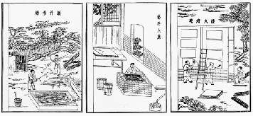

Борис Акунин
Мой календарь
Сегодня один из моих профессиональных праздников, да и для вас это тоже праздник: годовщина изобретения бумаги. Считается, что 11 марта 105 года от рождества Христова (летоисчисление, конечно, было другое) гениальный китаец по имени Цай Лунь впервые изготовил настоящую бумагу.
Путь изобретателя был долог и причудлив.
Сначала он попробовал использовать осиные гнезда, обладавшие нужной вязкостью. Потом видимо сообразил, что на таком сырье массового производства не наладишь. Тогда Цай Лунь принялся соскребать верхний слой с мертвой древесины, поскольку там содержится много целлюлозы, а в качестве увлажнителя использовал слюну. Но столько не наплюешься. Поэкспериментировал с коноплей, тутом, старыми тряпками (правильная идея, но ткань тогда была слишком дорога) и в конце концов пришел к бамбуку, которого в Китае, как на Руси крапивы, и даже больше.
Сосредоточиться на поставленной задаче Цай Луню помогало то, что он был придворным евнухом и не отвлекался на всякие посторонние занятия вроде любовных страданий, семьи и прочего.
На удобном и практичном новоизобретенном материале Цай Лунь издал канонический конфуцианский трактат «Сы шу у-цзин», используя вместо печатного станка (его пока не изобрели, не всё сразу) сто писцов.
Еще про великого китайца известно, что жизнь его закончилась печально - он покончил с собой. Оставил на бумаге записку или нет, не сообщается.
Про бумагу главное помнить, что она ни в чем не виновата. Всё стерпит, всё сохранит, так что не вырубишь топором: и мудрость, и глупость, и правду, и ложь, и радость, и горе.